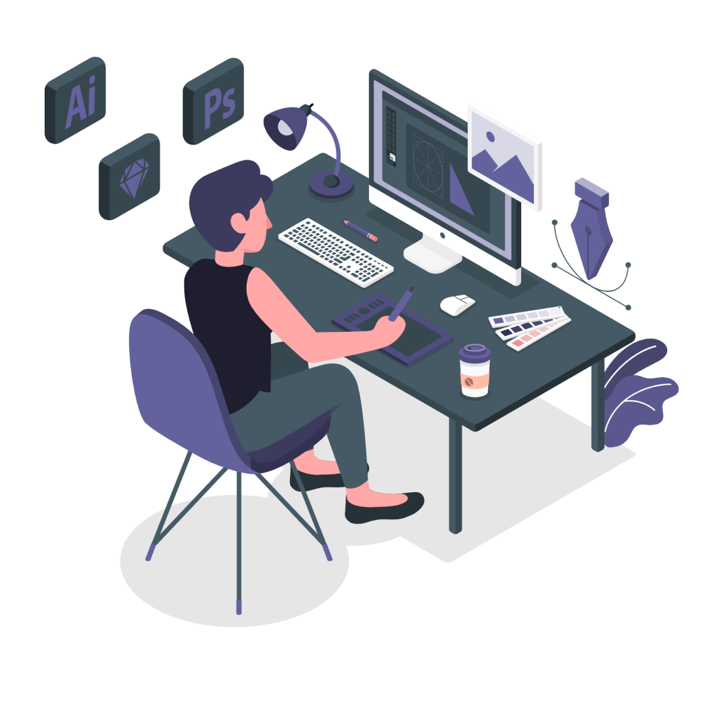
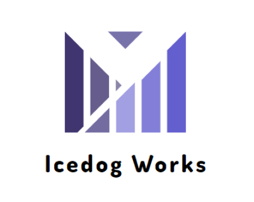

タスク管理の時間を 削減するツール
Ravek（レイベック）は、
複数人が関わるプロジェクトでのタスク管理を簡単かつ高速にするツールです。
タスクの登録や進捗管理の手間を減らし、わかりやすく見える化することで
タスク管理にかかる時間を極限まで減らし、本質的な業務に時間を使いましょう。
Ravekの3つの特長
-
タスクの種類・進捗を
ダッシュボードで確認可能Ravekはメンバーが入力したタスクを整理し、ダッシュボードにガントチャートとして表示。ダッシュボードを確認するだけで、誰のどのタスクがどの程度進んでいるのかを一目で把握できます。
-

タスクの入力がシンプルかつ簡単。
入力の手間が最小限にタスク管理ツールで面倒になりがちなタスクの入力作業。RavekはPC・スマートフォンのどちらでもシンプルかつ簡単に入力でき、手間が最小限に抑えられます。本質的な業務に時間を割きましょう。
-
SlackとのAPI連携
ツール切り替えの手間を削減RavekはSlackと連携することで、Slack上でRavekをタスクを追加したり、確認したりできます。都度の切り替えの手間がなくなり、シームレスに扱えるのが特長です。Slackを導入しているなら違和感なく使用できます。
14日間の無料トライアル可能。
Ravekで快適なタスク管理を体験しよう
導入実績
- 
導入までの流れ
-

無料トライアルを開始
まずはRavekの使用感をお試しください。最初の14日間は無料でご使用いただけます。
-
本格導入をサポート
Ravekを気に入っていただけましたら、適したプランで導入ください。導入にお困りの際は、メール、またはチャットにてサポートいたします。
-
全プロジェクトへ展開
Ravekは段階的な導入がおすすめです。主要プロジェクトでの運用に慣れたら、全プロジェクトへ展開を行いましょう。
14日間の無料トライアル可能。
Ravekで快適なタスク管理を体験しよう
料金プラン
|
ライト 月額1,980円 無料で使ってみる |
ベーシック 月額2,980円 無料で使ってみる |
プレミアム 月額4,980円 無料で使ってみる |
|
| プロジェクト数 | 5 | 15 | 15 |
| メンバー数 | 10 | 30 | 30 |
| ストレージ(容量) | 25GB | 50GB | 100GB |
| 2段階認証 | ○ | ○ | |
| IP制限 | ○ | ||
| メールサポート | ○ | ○ | ○ |
| チャットサポート | ○ | ○ | ○ |
| 無料で使ってみる | 無料で使ってみる | 無料で使ってみる |
よくある質問
Ravekはユーザー1人あたりの課金制なのですか？
いえ、Ravekは１アカウント開設いただくと、そのプランに応じたユーザー数の分だけ、使用できます。
もしプランのデフォルトユーザー数を超えて利用されたい場合は、お問い合わせください。
Ravekはユーザー1人あたりの課金制なのですか？
いえ、Ravekは１アカウント開設いただくと、そのプランに応じたユーザー数の分だけ、使用できます。
もしプランのデフォルトユーザー数を超えて利用されたい場合は、お問い合わせください。
Ravekはユーザー1人あたりの課金制なのですか？
いえ、Ravekは１アカウント開設いただくと、そのプランに応じたユーザー数の分だけ、使用できます。
もしプランのデフォルトユーザー数を超えて利用されたい場合は、お問い合わせください。
Ravekはユーザー1人あたりの課金制なのですか？
いえ、Ravekは１アカウント開設いただくと、そのプランに応じたユーザー数の分だけ、使用できます。
もしプランのデフォルトユーザー数を超えて利用されたい場合は、お問い合わせください。
14日間の無料トライアル可能。
Ravekで快適なタスク管理を体験しよう